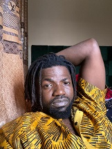

Curriculum Vitae (CV)

Name: Kenechukwu Okeke
DOB: 09-09-1987
Height: 6ft
Nationality: Nigerian
State: Anambra State
Address: No 4, Uzokwe close, Nnewichi Nnewi. Anambra state
Availability: Available to start immediately
E-mail: xkendo007@gmail.com
SUMMARY:
Honest | Hard Working | Humble | Punctual | Dependable | Resilient
EDUCATION:
- B.Eng Electrical Engineering | University of Nigeria | 2015
- West African Examination Council | 2006
WORK EXPERIENCE
Skills:
- Managerial Skill:⭐⭐⭐⭐⭐
- Mixer:⭐⭐⭐⭐⭐
- Baker:⭐⭐⭐⭐⭐
- Computer Engineer:⭐⭐
- Electrical Engineer:⭐⭐
AWARDS:
- Best Football Coach Of NYSC Football Tournament🏅(2017)
Others: